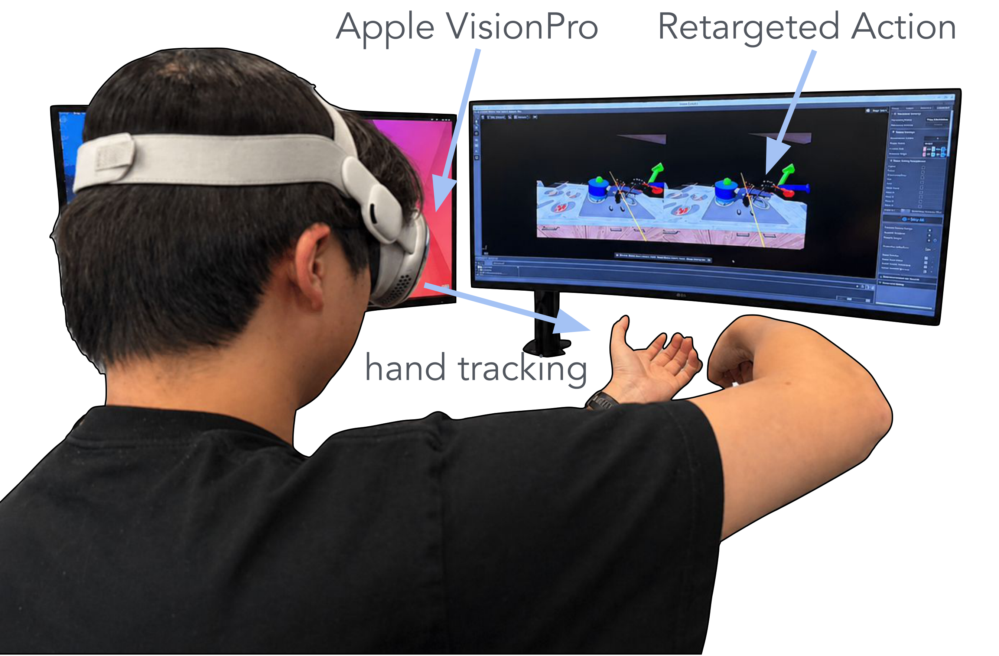

material/HammerStrike.mp4
Video
Abstract
Building general-purpose dexterous manipulation policies requires benchmarks that go beyond isolated tasks and evaluate policies across diverse interaction modes, sensory conditions, and robot embodiments. However, existing benchmarks remain limited in task diversity, embodiment coverage, or controllable visual variation, hindering studies of cross-task and cross-embodiment generalization. We present DexVerse, a large-scale and modular benchmark for dexterous manipulation. DexVerse includes 100 tasks spanning a broad range of manipulation skills, including object grasping and relocation, articulated-object interaction, functional tool use, bimanual coordination, non-prehensile control, contact-rich behaviors, multi-goal execution, and long-horizon multi-stage task completion. It supports 3 robot arms and 6 dexterous hands, and is extensible to new tasks, assets, and embodiments. To evaluate visuomotor generalization, DexVerse provides configurable visual variations in textures, background, lighting, and camera viewpoints. We further provide a VR-based teleoperation interface and 3,180 demonstrations with synchronized proprioceptive, RGB, depth, point-cloud, and state observations. We benchmark representative methods, including Diffusion Policy, DP3, OpenVLA, and π0.5, across 19 tasks. Results reveal substantial challenges in task generalization and visuomotor robustness, establishing DexVerse as a testbed for general-purpose dexterous manipulation.
Task Variation
DexVerse contains 100 dexterous manipulation tasks organized into 8 categories: primitive, functional, articulation, non-prehensile, contact-rich, bimanual, multi-goal, and long-horizon. The tasks are grouped by the dominant interaction pattern and manipulation challenge. We provide 3,180 demonstrations in total: 56 short-horizon tasks with 50 trajectories each, 5 long-horizon tasks with 20 trajectories each, plus 1 trajectory on each of 5 alternative robot embodiments for every short-horizon task. The 56 short-horizon tasks are presented below, and the long-horizon tasks are showcased in the Long-Horizon section. Filter by category and use the arrows to browse representative demos, each paired with its description and success condition.
Visual Variation
When visual randomization is enabled, appearance is sampled at reset from predefined libraries. Variations includes table materials, lighting, background HDR skyboxes, exposure, and color temperature. The task objective and success conditions do not need to be modified. DexVerse also supports camera-viewpoint changes, so the same task can be observed under different conditions.
Material
Object and table materials resampled at reset.
material/InsertPen.mp4
InsertPen
material/PickThinObjectFromContainer.mp4
PickThinObjectFromContainer
Lighting
Light direction, intensity, and color temperature varied.
lighting/HammerStrike.mp4
FunctionalHammerStrike
lighting/InsertPen.mp4
InsertPen
lighting/PickThinObjectFromContainer.mp4
PickThinObjectFromContainer
HDR Background
Background skybox swapped from a library of HDR environments.
hdr/HammerStrike.mp4
FunctionalHammerStrike
hdr/InsertPen.mp4
InsertPen
hdr/PickThinObjectFromContainer.mp4
PickThinObjectFromContainer
Robot Variation
DexVerse currently supports 3 robot arms (Franka Research 3, UR10e, xArm 7) and 6 dexterous hands (Sharpa Wave, WUJI Hand, Shadow Hand, Inspire Hand, Allegro Hand, LEAP Hand), spanning diverse kinematics, degrees of freedom, joint limits, and hand morphologies. Each embodiment is defined by a compact and modular specification, and every hand also has a floating-wrist variant. The modular design of the system also support custom robot arms and hands to be later added by users. The grid below compares the same task across arm–hand combinations.
Loading robot variation matrix...
Long-Horizon Tasks
Five multi-stage long-horizon tasks that chain skills into temporally extended procedures. We provide 20 teleoperated demonstration trajectories for each long-horizon task. Use the arrows to scroll through the showcase.
System Design
We made DexVerse a configuration-driven, modular simulation benchmark on Isaac Lab where tasks, embodiments, and visual conditions are decoupled so each can be swapped or extended independently.
- Config-driven. Built on Isaac Lab's manager-based RL environment; observations, actions, events, and success predicates are config classes — change cameras, randomization, or thresholds via overrides, not code.
- Inherit & override. Main Base → Task Family → Task; each task overrides only its object, target, and success threshold, keeping tasks decoupled from embodiments.
- Embodiments. 3 arms × 6 dexterous hands paired through a compact arm–hand spec, each with a floating-wrist variant.
- Data. VR teleoperation (Apple Vision Pro + dex-retargeting) yields 3,180 demos — 50 per short-horizon task, 20 per long-horizon task, and 1 per short-horizon task on each of 5 additional robot embodiments — with synced proprioceptive, RGB, depth, point-cloud, and state observations, replayed locally for portable, drift-free playback.


Baselines
We also provide baseline performance for 19 tasks as a reference for future research. Four policies are evaluated: π0.5, OpenVLA, DP3, and DP. We evaluated each task for 50 rollouts and report the success rate in the table below. Best mean success is just 0.34, and no method dominates all categories. Best per task in bold.
| Category | Task | π0.5 | OpenVLA | DP3 | DP |
|---|---|---|---|---|---|
| Pick-and-Lift | BimanualLiftCarton | 1.00 | 0.60 | 0.90 | 0.94 |
| BimanualLiftTray | 0.84 | 0.72 | 0.56 | 0.60 | |
| GraspBleach | 0.10 | 0.06 | 0.32 | 0.10 | |
| GraspCup | 0.16 | 0.08 | 0.22 | 0.50 | |
| GraspKettle | 0.58 | 0.16 | 0.80 | 0.90 | |
| GraspPan | 0.06 | 0.02 | 0.16 | 0.52 | |
| RetrieveCup | 0.02 | 0.02 | 0.06 | 0.04 | |
| Articulated | OpenFaucet | 0.84 | 0.36 | 0.76 | 0.28 |
| OpenFlatFolder | 0.00 | 0.00 | 0.18 | 0.16 | |
| OpenLaptop | 0.04 | 0.02 | 0.02 | 0.10 | |
| OpenStapler | 0.86 | 0.92 | 0.84 | 0.86 | |
| SlideUtilityKnife | 0.00 | 0.00 | 0.00 | 0.00 | |
| SqueezeScissors | 0.36 | 0.22 | 0.20 | 0.00 | |
| Tool Use | FunctionalHammerStrike | 0.22 | 0.18 | 0.26 | 0.00 |
| FunctionalPourCan | 0.04 | 0.10 | 0.14 | 0.38 | |
| FunctionalPourMug | 0.52 | 0.16 | 0.64 | 0.26 | |
| Precision | InsertPen | 0.06 | 0.00 | 0.08 | 0.00 |
| PushSmallSphereObstacleSlope | 0.82 | 0.08 | 0.28 | 0.36 | |
| PushT | 0.00 | 0.00 | 0.00 | 0.00 | |
| Mean | 0.34 | 0.19 | 0.34 | 0.32 | |
Online success rate over 50 rollouts per task. Observation modalities: π0.5 / OpenVLA / DP use RGB + state; DP3 uses point clouds.
BibTeX
@article{yao2026dexverse,
title = {DexVerse: A Modular Benchmark for Multi-Task, Multi-Embodiment Dexterous Manipulation},
author = {Yao, Yunchao and Xu, Zhuxiu and Zhang, Tianqi and Liu, Zixian and Li, Sikai and Wei, Zhenyu and Chen, Feng and Huang, Dihong and Wan, Kechang and Ma, Chenyang and Zhao, Shuqi and Gao, Shenghua and Tomizuka, Masayoshi and Ma, Yi and Ding, Mingyu},
journal = {arXiv preprint arXiv:2607.08751},
year = {2026}
}